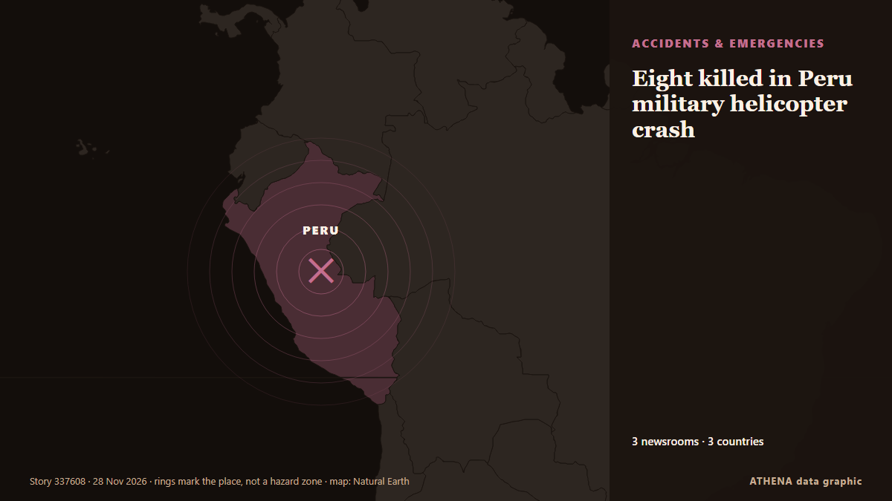

Δυστυχήματα & έκτακτες ανάγκες
ΧορηγούμενοΠαρουσιάζεται από  Cybernetics and Artificial Intelligence Lab Welcome to the Cybernetics and Artificial Intelligence Laboratory, established at the Department of Business Administration of the National and Kapodistrian University of Athens. The lab is headed by Professor Dimitrios Thomakos. The lab aims to do research that can be published in top venues. Our research uses tools and methods of Artificial Intelligence, and lies in the following areas: - Forecasting - Decision making - Cyber security - Finance We are always looking forward to collaborating with exceptional students!
Cybernetics and Artificial Intelligence Lab Welcome to the Cybernetics and Artificial Intelligence Laboratory, established at the Department of Business Administration of the National and Kapodistrian University of Athens. The lab is headed by Professor Dimitrios Thomakos. The lab aims to do research that can be published in top venues. Our research uses tools and methods of Artificial Intelligence, and lies in the following areas: - Forecasting - Decision making - Cyber security - Finance We are always looking forward to collaborating with exceptional students!
Οι τίτλοι των ειδήσεων παρουσιάζονται στα αγγλικά, όπως δημοσιεύτηκαν.

Δυστυχήματα & έκτακτες ανάγκεςEight killed in Peru military helicopter crash
LIMA: A Peruvian air force helicopter carrying military personnel crashed in a coca-growing river basin in the country’s southeast, killing eight people and seriously injuring the pilot, the defence… από New Straits Times
Egypt detains a driver suspected of causing Cairo tanker crash that killed 31
Egyptian authorities have detained a driver suspected of causing a fuel tanker to overturn on a major highway in Cairo. από ABC News (International)
Hisham Talaat Moustafa, Ahmed Ezz, Yassin Mansour donate EGP 30m to families of Ring Road accident victims
Egyptian businessmen and the banking sector have mobilised at least EGP 60 million (USD 1 million) in financial assistance for victims of a deadly fuel tanker fire on Cairo’s Ring Road, following an… από Egyptian Streets
Iranian activist and Oscar-nominated screenwriter Mehdi Mahmoudian arrested in Tehran
CAIRO: Leading Iranian rights activist and Oscar-nominated screenwriter Mehdi Mahmoudian was arrested at his home in Tehran on Wednesday, a friend and Europe-based activist told The Associated Press… από Arab News
Mirziyoyev sends condolences to Egyptian president over Cairo fire that killed 31
Uzbekistan’s President Shavkat Mirziyoyev has sent condolences to Egyptian President Abdel Fattah el-Sisi following a fuel tanker accident near Cairo on November 25 that triggered an explosion and… από Daryo
Tinubu approves houses, N100m each for families of NAF crash victims
President Bola Tinubu says he has approved three-bedroom flats situated in Abuja to be given to the families of the 25 people who died in the Nigeria Airforce aircraft crash in Igbokoda, Ondo State. από Daily Trust
High-quality medieval armor discovered in shipwreck that sank in 1495
The ship, known as "Griffin" or "Gribshunden," was the warship of Denmark's 15th-century leader King Hans. από CBS News (World)
Man in M'sia collapses during badminton game, no one knows CPR, victim dies
A badminton player said he could only watch helplessly as he did not know how to administer first aid. από Mothership
2 workers injured in explosion, fire at Kerteh factory
The victims, a local man and a Bangladeshi national, have been taken to the Paka health clinic for further treatment. από Free Malaysia Today
One killed, five injured in BNP factional clash in Munshiganj
A man was killed and several others were injured in a clash between two factions of Bangladesh Nationalist Party (BNP) in Munshiganj over the upcoming union parishad (UP) elections and establishing… από Prothom Alo (English)
A year after Hong Kong's deadliest fire in decades, authorities are wary of memorials
The Wang Fuk Court fire was the world's deadliest residential blaze since 1980. από SBS News
Pakistan: Emergency teams search for survivors beneath collapsed building
At least one person was killed and 10 others injured when a multi-storey building under construction collapsed in Karachi, on Wednesday 25 November 2026. από Euronews English
Uganda: 10 Dead As Truck Plunges Into River in Zombo
[Nile Post] At least 10 people have been confirmed dead and four others seriously injured after a truck carrying cassava flour and passengers lost control and plunged into River Nyagak in Zombo… από AllAfrica
Sindh suspends SBCA chief, other officials over 'negligence' in Karachi building collapse
Rescue personnel and volunteers search for victims in the rubble of the collapsed under-construction building in Karachi on November 25, 2026. — AFPDC East Nasrullah Abbasi and SSP Zubair Sheikh… από Geo News (English)
A year after Hong Kong's deadly fire, survivors struggle with loss and lingering sense of injustice
Even as life kept pushing them forward, some Wang Fuk Court fire survivors say justice has yet to be served. από CNA (Channel NewsAsia)
31 killed in fire after vehicle overturns in Egypt - UPDATED
A vehicle carrying petroleum products overturned and caught fire on a major ring road in Cairo. από The Straits Times